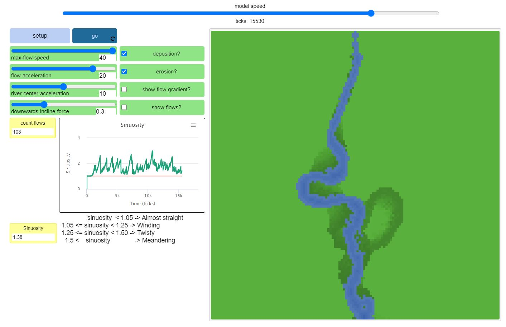

Home
Portfolio
About Me
This is my Portfolio Page!

1.1 Cake Maker

This project lets you choose different ways to make a cake, like the number of layers and the color of the frosting, even cake flavors like chocolate and vanilla. All shapes were created by hand and uses input commands to create the cake.
1.2 Catch-Them-All


The Catch-Them-All project is about catching colored circles into a basket to increase the score. You can use the right and left keys using a and d to move the basket under the circles. The score is counted on-screen and after the timer is up,
The score is shown at the end.
Feed the Dino Scratch
Feed the Dino game is about clicking on different types of food to feed the dinosaur and progress to the next level. There are 2 different levels, one with a pterodactyl and the other with a triceratops.
get the score to 30 on each level to pass. Each level gets less time, and there is a timer on the top counting down how much time is left to get the required score.
2.2 Fish Tank Project

The fish tank program has many parts. The first one is finding emails that are from scammers trying to phish people from inside a company. The emails have minor spelling errors and official looking emails to bait people into clicking and
putting in usernames and passwords. The next part is fixing parts of the program that are broken like reordering certain code and fixing mispellings.
4.1.4 River Meandering Simulation

The purpose of thisa project is to explore simulations through netlogo. We picked a simulation about the erosion and movement of a river over time, and answered questions about how it can relate to real life.
Over time, turtles would spawn in the top of the river and flow down representing weater currents. When these turtles hit the walls they would erode, and when the wall is eroded enough to the point when most of the current is going toward the wall,
The whole river can shift and start to flow in a new direction.
Batter Up Baseball Final Project
Controls: SPACEBAR to pitch the ball, X key to swing the bat, timing is important.
The goal of the game is to get as high of a score as possible. There are many aspects to this game that I created from scratch like all of the sprites except the scratch cat model, A 3d looking pitching game with random placements, and hit timing.
The count of balls and strikes works in a sprite, and the outs are tracked through 3 white balls on the top that change color depending on how many strikeouts there are. The strikes work how they normally would in baseball, if you swing early or miss then it is a strike,
and if the ball is outside the box it is a ball. Timing matters and to track how well you timed it, the ball flashes a color after a hit. There is a working base system in the top right, the sprites move around and everything, and if you hit enough singles or walks, you can score.